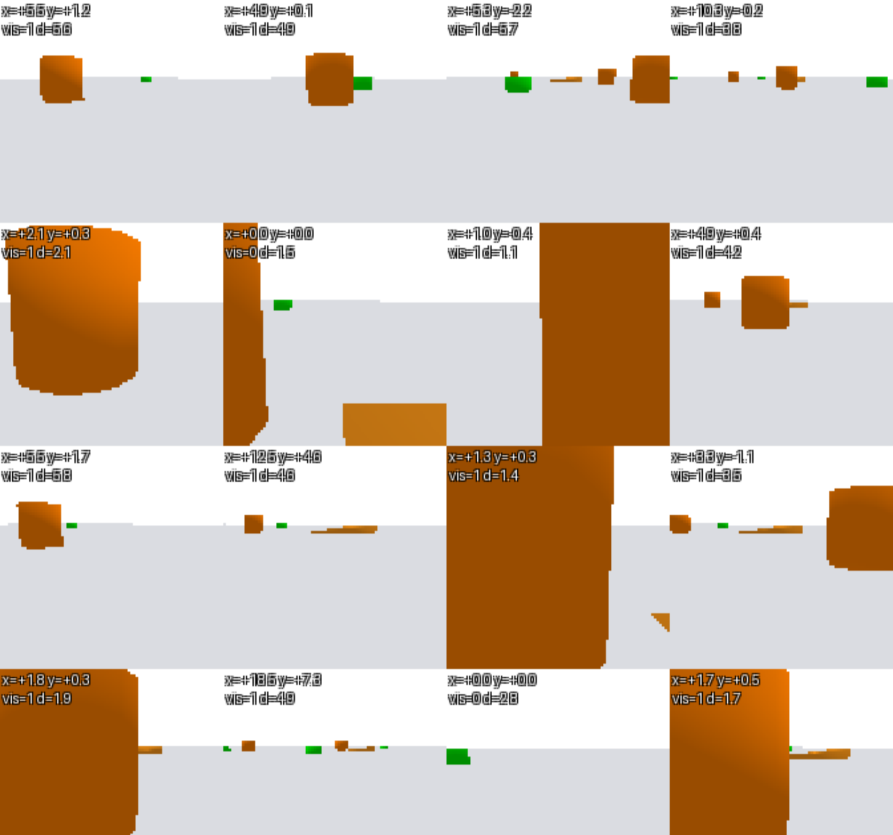
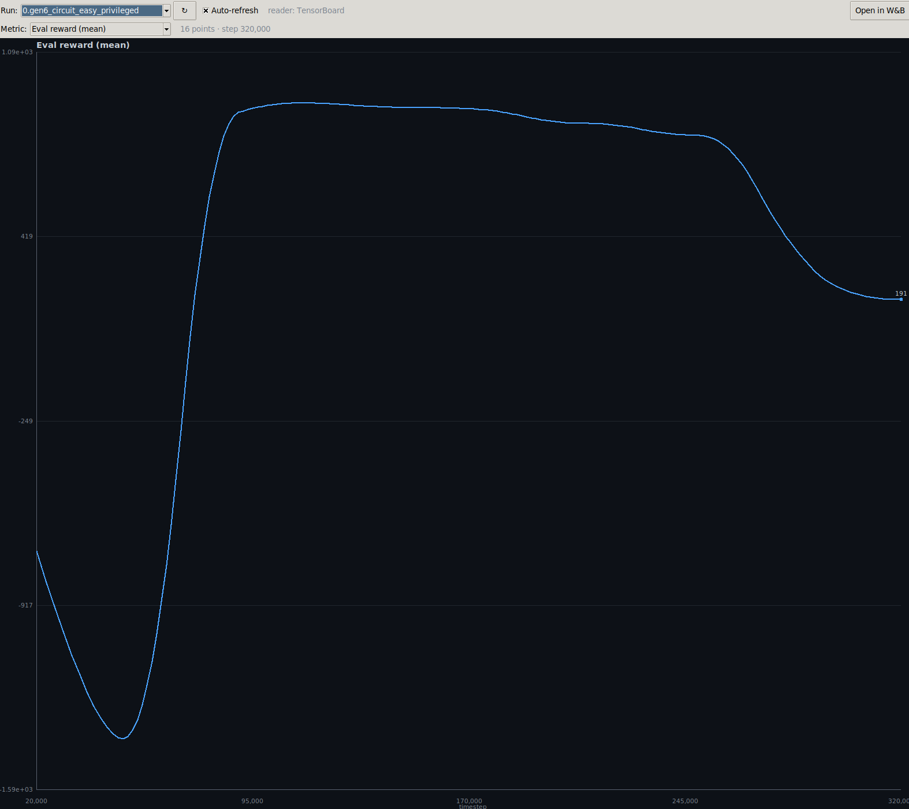
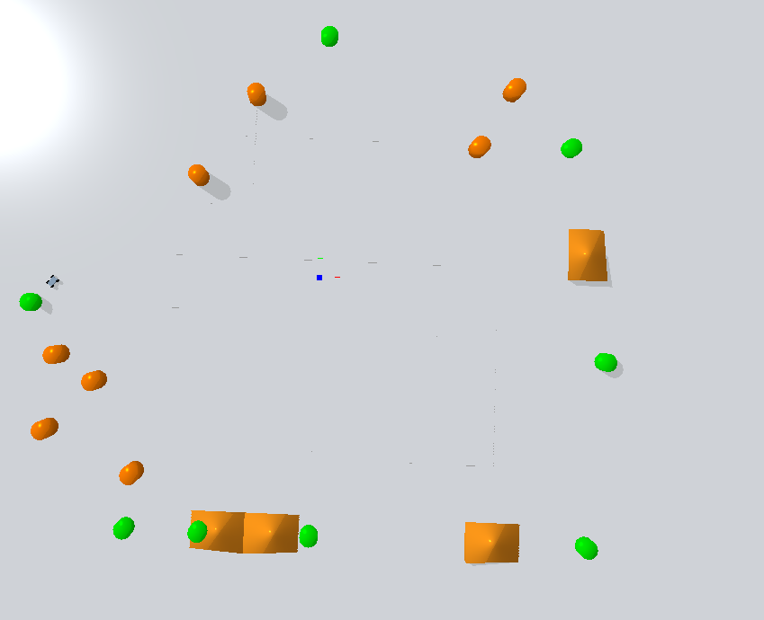

A reinforcement-learning agent that learns to drive a rally circuit
This project trains an autonomous rally-racing agent with deep reinforcement learning. A car learns to follow a sequence of checkpoints around a circuit while avoiding cones and handling ramps, using Proximal Policy Optimization (PPO) in a PyBullet physics simulation.
The agent is developed in two stages. First a privileged policy learns to drive from ground-truth state, including the exact position of the nearest obstacle supplied by the simulator. That policy is then fine-tuned into a vision policy, where a convolutional network estimates obstacle position from the car's camera and feeds those predictions into the same controller. Training follows a difficulty curriculum, with each stage warm-starting from the policy learned on the previous one.
Trained agent driving the circuit (to be added)
Rather than learning to see and drive at once, the agent separates the two problems. The privileged policy masters control with perfect information; the vision stage then swaps ground-truth obstacle state for camera-derived estimates and adapts to that noisier signal — keeping the hard-won driving skill while learning to tolerate imperfect perception.
PPO trains on an 11-dimensional state vector: the next checkpoint and nearest obstacle in the car's local frame, heading, speed, and chassis angles. Ground-truth obstacle position makes this the strong baseline.
A convolutional network (ObstacleCNN) is trained on
camera frames to predict whether an obstacle is visible and where it is
in the car's local frame.
The privileged policy is fine-tuned in an environment where the CNN's prediction replaces the ground-truth obstacle channels, so the agent drives from what it can actually see.


Behaviour is shaped by a reward function that sums several independent terms. Progress toward the active checkpoint is rewarded and regression penalised; reaching a checkpoint gives a bonus. Smoothness terms penalise yaw jerk and sudden roll/pitch changes to discourage erratic, unstable driving. Obstacles contribute both a hard collision penalty and a softer repulsive field that grows as the car nears any cone, so the agent keeps clear rather than merely avoiding contact. On ramp circuits, a small bonus rewards committed jumps.
The agent is trained on a sequence of circuits of increasing difficulty. Each circuit is a strict superset of the previous one — new elements are added, never removed — so a policy trained on an easier circuit is always a sensible starting point for the next. Privileged policies warm-start along this chain.
| Scenario | Cones | Ramps |
|---|---|---|
circuit_easy | — | — |
circuit_medium | 4 (SW cluster) | — |
circuit_hard | 4 (SW cluster) | all 4 |
circuit_difficult | all 8 | all 4 |
The PyBullet environment provides a constrained racing circuit with a checkpoint sequence the car must follow in order. Depending on the scenario, the track adds cones to avoid and ramps to negotiate. Obstacle placement is fixed on the easier circuits and jittered per reset on the harder ones, so the agent must generalise rather than memorise a single layout.

The project ships with a desktop control panel that runs the whole pipeline — training, vision fine-tuning, and evaluation — without touching the command line. It exposes every training and reward setting, streams live console output, and plots training metrics in real time by reading the local TensorBoard logs. A one-click launcher and an offline HTML system guide round out the workflow.
Training showed steady improvement in driving competence as PPO refined its policy, with evaluation reward climbing across the curriculum. The privileged policy reaches reliable lap completion on the simpler circuits; the hardest circuit, with the full set of cones and ramps, remains the most failure-prone, where reward variance is highest.
Vision policies perform somewhat below their privileged counterparts, as expected — the CNN-derived obstacle estimate is noisier than ground truth — but demonstrate that a controller trained on perfect state can transfer to camera-based perception. Reward shaping and the warm-start curriculum were the two most important contributors to stable, convergent behaviour.
Future work may include richer state representations, additional sensing, alternative RL algorithms, and more complex tracks.
Rally-Racing/ ├── simple_driving/ # gym environments + assets │ ├── envs/ │ │ ├── rally_driving_env.py # privileged obs (ground-truth obstacle position) │ │ └── vision_rally_env.py # vision obs (CNN-replaced obstacle channels) │ └── resources/ # URDF files, meshes ├── src/ │ ├── control.py # GUI control panel (entry point for GUI operation) │ ├── config.py # shared config layer (defaults + gui_config.json) │ ├── tb_reader.py # dependency-free TensorBoard log reader (GUI metrics) │ ├── metrics_panel.py # in-GUI live metrics plotting + Open in W&B │ ├── train.py # train PPO with privileged observation │ ├── train_vision.py # fine-tune PPO with vision observation │ ├── test.py # evaluate / watch a privileged model │ ├── test_vision.py # evaluate / watch a vision model │ └── reward.py # reward function ├── vision/ │ ├── model.py # ObstacleCNN architecture │ ├── cnn_obstacle.pt # trained CNN weights │ └── train_cnn.py # CNN training script ├── docs/ │ ├── system_guide.tex # editable source for the system guide │ ├── system_guide.html # pre-built guide opened by the GUI button │ └── system_guide.css # guide stylesheet ├── gen6_models/ # trained policies (privileged + vision) ├── launcher.conf # venv path for the launcher (edit this) ├── setup.sh # one-time environment setup ├── launch.sh # everyday GUI launcher ├── install_desktop.sh # registers the double-click launcher └── Rally-Racing.desktop # Linux application launcher